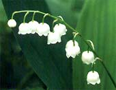
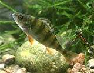
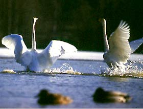

|


|
Một cuộc bầu chọn thập kỉ 80 cho thấy thiên nga, gấu, cá pecca, cây bulô, hoa lan chuông và đá granite là những biểu tượng thể hiện quyền năng, truyền thống của đất nước Bắc Âu.
- Thiên nga
Thiên nga có lẽ đã được coi là biểu tượng của Phần Lan từ thuở xa xưa. Ở những bức phác họa trên đá có niên đại hàng nghìn năm ở hồ Onenga, thiên nga đã được thể hiện như một sự tích kỳ bí. Ngoài ra, hình ảnh chú thiên nga trắng muốt bay trên nền trời xanh được liên hệ với lá cờ của Phần Lan, có nền trắng với sọc xanh. Không chỉ thế, thiên nga là con vật phổ biến nhát được đưa vào các clip quảng cáo, và là dấu hiệu đảm bảo hàng hóa không gây ô nhiễm môi trường.
- Chúa tể của miền hoang dã
Hiện ở Phần Lan có chừng 1.000 con gấu. Được coi là biểu tượng tiêu biểu, nhưng người Phần Lan đôi khi không cảm thấy thoải mái với con vật này. Lý do là người thu thuế từ trước đến nay được thể hiện dưới hình ảnh con gấu với chiếc mũ lưỡi trai và túi tiền to đùng.
- Hoa lan chuông
Hoa lan chuông được biết đến là một loại thảo dược, đồng thời cũng chứa chất độc chết người. Hoa nở rộ vào tháng 6 với mùi hương tinh
- Cây bulô
Thế kỉ 19, cây bulô được lãng mạn hóa và đi vào văn chương khá nhiều. Truyện cổ tích Cây bulô và ngôi sao của Zacharias Topelius kể về hai đứa trẻ bị lạc. Sau nhiều ngày tìm kiếm, chúng trở về được ngôi nhà yêu dấu nhờ nhận ra cây bulô quen thuộc trước sân. Ngày nay, hình ảnh cô gái mặc trang phục truyền thống dựa vào cây bulô được coi là biểu tượng của Phần Lan, có tới hàng trăm thiệp mững mạng hình ảnh tương tự. Thậm chí có một người đàn ông trẻ đã cầu hôn với cô dâu tương lai bằng chiếc nhẫn làm từ vỏ cây bulô.
- Cá pecca
Cá pecca thuộc họ cá rô, là một trong những thủy sinh phổ biến nhất ở Phần Lan, chúng sinh trưởng ở hầu hết ao hồ, sông suối. Chỉ có những hồ nước ở độ cao trên 450m so với mực nước biển ở những vùng miền núi, loài cá này mới không có khả năng chinh phục.
- Đá granite
Granite được hình thành từ thạch anh, Fenspat và mica cùng một số loại khoáng chất khác. Ở Phần Lan, ngoài việc xây dựng, granite cũng được sử dụng cho điêu khắc.
|

|